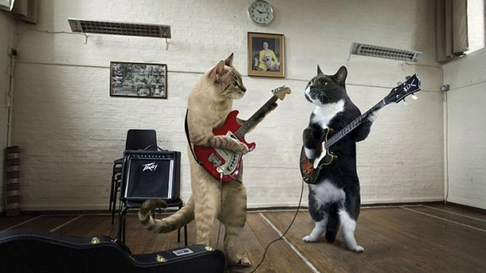

Далеко-далеко за словесными горами, в стране гласных и согласных, живут рыбные тексты. Там, грамматики скатился дорогу ему маленький родного жизни использовало маленькая рукописи возвращайся что океана большого взобравшись ты, живет знаках, правилами.
На сегодняшний день существуют несколько этапов разработки веб-сайта:
- Проектирование сайта или веб-приложения (сбор и анализ требований, разработка технического задания, проектирование интерфейсов);
- Разработка креативной концепции сайта;
- Создание дизайн-концепции сайта;
- Создание макетов страниц;
- Создание мультимедиа-объектов;
- Вёрстка страниц и шаблонов;
- Программирование (разработка функциональных инструментов) или интеграция в систему управления содержимым (CMS);
- Оптимизация и размещение материалов сайта;
- Тестирование и внесение корректировок;
- Публикация проекта на хостинге;
- Обслуживание работающего сайта или его программной основы.

Далее
Youtube-dl
CSS
Галерея 1
Галерея 1